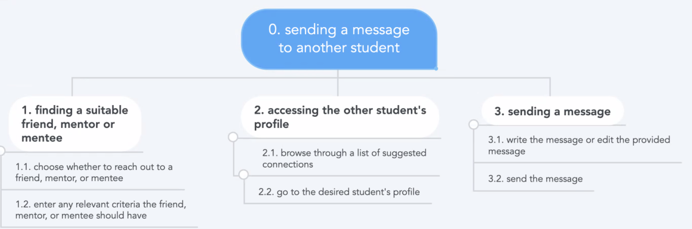

Because they come from a drastically different sociocultural environment, many immigrant, international, first-generation low income, and refugee undergraduate students studying in Wellesley College experience a lack of community and social + academic belonging. This prevents them from experiencing college life on an equal playing field as everyone else, and hurts both their psychological health and access to post-college opportunities.
Solution
We have built an interface where students of all backgrounds can connect with each other and feel a little less lonely. Students, especially first-years who are brought into this new enviornment would benefit knowing that members of the community are accessible. With this app, students will be able to develop relationships with students and professors from similar backgrounds, and find student clubs they're interested in.
User Analysis & Ideation (P1-P3)
Human-centered iterative design
Takeaways From User Interviews
Personas
Task Analysis
Domain Analysis
Scenarios
Takeaways From User Interviews
Students who fall in the target audience discuss their first-year experience
Our target audience are students at Wellesley College, especially first-years who come from an international, immigrant, refugee, or first-gen low-income background.
Students feel a big culture shock when they enter college.
Entering a new enviornment of people/academics and not having the usual support system caused some anxiety.
The first year of college is always a major adjustment socially and academically, especially for those unfamilair with the system (international students, first-generation students, etc)
Students do not know who they can talk to about certain aspects of college.
Forming connections with people of similar and/or different backgrounds is a common goal.
Some screenshots of our User Empathy maps
Personas
Fictional characters created based on user interviews
Task Analysis
Hierarchical task analyses describing the goals users should accomplish
Task 1: Create an account
Task 2: Send a message to another student

Task 3: Schedule a meeting with a professor
Task 4: Reach out to student organizations
Domain Analysis
Important entities that are relevant to the problem domain
People
Students, professors, student organizations
Websites
Faculty Websites
Applications
WEngage, Gmail, and Google Calendar
Objects
dorms, professor offices, student orgs meeting locations
Scenarios
Concrete, realistic stories that describe the main tasks
Task 1: Make an account on the app
Ana is a first year, FGLI, refugee student who just started her first semester at Wellesley College. Ana was super excited to start her journey at Wellesley, but she’s having a hard time adjusting socially and academically. When she asked some upper class students what helped them adjust to Wellesley and thrive, they all mentioned having a strong support system that was there for them throughout the journey. Ana is still unable to build strong connections with students and can’t seem to find a good advisor who can understand her background. She met a few people during orientation and in her classes, but she’s still unable to find her support system. The campus is so big and lonely, and Ana doesn’t know where to go to find friends and professors that can give her advice. People also started talking about summer internships (ALREADY!) and she just feels confused as no one in her family can understand what she’s going through but everyone expects her to succeed. Ana heard there’s an app that allows her to meet students and professors in her college based on specific criteria she selects. So she went to the play/app store and downloaded it to see what all the buzz is about.
Task 2: Send message to another student
Mimi is a first year, FGLI, Chinese immigrant student who just started her first semester at Wellesley College. Coming to the United States was a huge culture shock. In addition to keeping up with school, she really wants to make new friends. In high school, she did not not make many friends because she was busy working jobs afterschool, helping her parents fill out documents, and taking care of her siblings. At orientation, Mimi sees that people are quickly becoming friends with each other. She feels like this is high school all over again. Finding friends should be easy, especially in such a small school right? Everyone at Wellesley is unqiue, but adjusting to college life, especially the social aspect, would be much easier if there was someone who could relate to her story.
Task 3: Schedule a meeting with a professor
Mimi is thinking of declaring a major in chemistry and sociology (on the pre-med track). She wants to reach out and make connections with professors in those departments, but feels uncomfortable doing so in a predominantly white institution and is unsure of what to say - especially as she was unable to get into any relevant classes during course registration. She especially wants to find any other Asian professors in the chemistry and sociology classes, which she is unable to without looking at every individual profile on the directory.
Task 4: Reach out to a student organization
It has been a few weeks since class has started and Mimi wants to join some student organizations to get to know her peers. Other than her roommate, she has not really met other people. She has taken the time to admire the beautiful Wellesley campus, especially around Lake Waban. Mimi wants to find an org that raises awareness about enviornmental consequences. She does not know much about student organizations and hopes to reach out to someone from that group.
Prototyping (P2-P5)
Timeline from sketched wireframes to interactive prototype
Sketched Wireframes
Two preliminary designs of sketched user interface to get feedback in class for our peers. Click on the photo to learn more.
Takeaways From In-Class Design Review
Plans on improvemenets for the next iteration (low fidelity wireframe) from the feedback received on the sketched interfaces. Click on the photo to learn more.
Low Fidelity Interactive Prototype & Design Direction
A low fidelity interactive prototype that allows the user to perform the 4 tasks outlined in the task analysis. Click on the photo to watch a video of the prototype and learn about our design direction.
Overview of High Fidelity in Look Prototype & Design Rationale
Overview of a prototype that is high fidelity in look and medium fidelity in breadth. It was made using the software Sketch for one task only (Message a friend). The design rationale behind the interface is also included. Click on the photo to learn more.
Takeaways from Heuristic Design Evaluation
Feedback on the high fidelity in look and medium fidelity in breadth prototype by our peers. Click on the photo to learn more.
Final InVision Prototype
The final prototype allows the user to reach out to a friend and a professor from a similar background to them. The user can also reach out to an student organization that matches their interest. Click on the photo to watch the video.
Design Directions
Two preliminary designs of user interface
Design 1
Create Account 1: Formal and dry, vertical scrolling to create the account, and multiple choice
Find Friends 1: Clicking numbered pages at the bottom of the screen when browsing friends
Find Professors 1: Horizontal menu bar to show user status; clicking on professor's image takes to their profile; can only interact with the professor after seeing their profile
Design 2
Create Account 2: Progress bar while creating the account (move horizontally between pages)
Find Friends 2: Conversational style and more friendly tone
Find Professors 2: Fill in the blank manually and navigation happens via 'back' and 'next' button
Takeaways from in-class design review
Plans on improvement for prototype
Good Design Elements
Consistency with other networking applications.
The design serves a need of college students (social connections and academic success).
Clean and simple design: easy to learn and navigate.
The personas were detailed and clear: easy to empathise with them.
Use of icons is good for learnability
Filter option to narrow the search.
Growth Areas
Clear differentiation in functionality between this app and other apps like social media.
Fear of sending messages ⇒ provide some guidelines on how to approach speaking to professors
The task of creating an account is self-explanatory.
Hard to differentiate between the two designs presented.
Option of hiding certain personal information.
Add a group conversation feature.
Low Fidelity Interactive Prototype & Design Direction
Implemented the feedback from the sketched designs and built a low fidelity interactive prototype to get a quick feedback on the layout of the app using Balsamiq
Video of Prototype
Design Direction Based on the Feedback from the Sketched Wireframes
Adopted the second design characterized by the conversational style of interaction with the user and the horizontal progress bar.
Adopted some features from the first design such as the use of icons, ability to choose multiple options for the questions regarding identity and the ability to choose what to disclose publicly.
Added the option of updating the profile after creating the account to allow users to reflect their growth throughout their time at Wellesley.
Added a group chat option so that students can talk to multiple people at a time if they want.
Added a disclaimer at the beginning to ensure that the user knows what fields are required to create a profile (name, last name, email).
Allowed the user to browse through friends in addition to having a suggested list to not get stuck in a bubble but also not get overwhelmed with the long list of students.
Overview of high fidelity prototype & design rationale
Implemented the feedback from the low fidelity prototype and built a high fidelity prototype in look using Sketch for one task only (Message a Friend) to get feedback on the layout and aesthetics of the app before adding other functionalities
Screenshots from the Wireframe
Design Rationale
Typography
The only font used was Gill Sans
Similar font to other apps for external consistency.
Belongs to the sans-serif family to be casual and not so professional like banking apps.
Stylized the font by using bold, semi bold, and regular.
Color Scheme
We chose a dark blue and yellow color scheme
The colors are complementary in the color wheel.
Chose the blue to represent the Wellesley Blue which provokes feelings of calmness and serenity in addition to establishing a sense of credibility.
Chose the yellow to provokes feelings of happiness and cheerfulness while grabbing attention.
All of the written text is in blue so users can see the words
All buttons are in yellow as it grabs attention to the call for action buttons.
Graphic design
Simple design for high learnability and efficiency
White and clean background that goes well with yellow and blue.
Horizontal menu bar at the bottom to easily access the different functionalities.
The tab in current use is highlighted in blue for visiblity of system status.
No use of abbreviations nor slang words to ensure that all students with a good understanding of English can use the app.
Incorporate icons with text to increase accessbility.
The filters allows the user to select multiple choices to not pressure them to come up with their own answers and to enable them to choose multiple options.
External consistency with other similar apps like social media and chatting apps.
Takeaways from Heuristic Design Evaluation
Feedback on the high fidelity in look and medium fidlelity in breadth prototype by our peers.
Good Design Elements
The use of icons besides each filter criteria was helpful to users, demonstrating a match between the system and real-world imagery.
Users reported high levels of internal consistency, citing the similar color scheme for buttons between different tabs on the app.
The use of concise language also made the app easier to understand, and this was supplemented by the app’s minimalist design.
The pre-written message alleviated the stress of reaching out to strangers.
Growth Areas that were Implemented
Link all tabs (e.g. profs, sibs, orgs, etc) in the menu bar.
Improve the users’ visibility of system status by adding user responses to each filter section after the filter was checked.
Allow the user to undo messages to sibs and student orgs, while keeping an additional “are you sure?” page when emails to professors were not unsendable.
Final InVision Prototype
The final interactive prototype that was made using InVision. The user can reach out to friends and professor from similar backgrounds. They can also reach out to student organizations that match their interest.